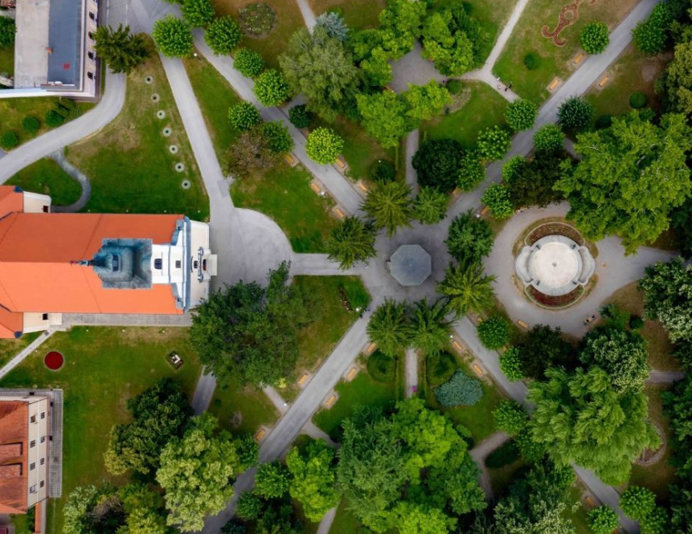
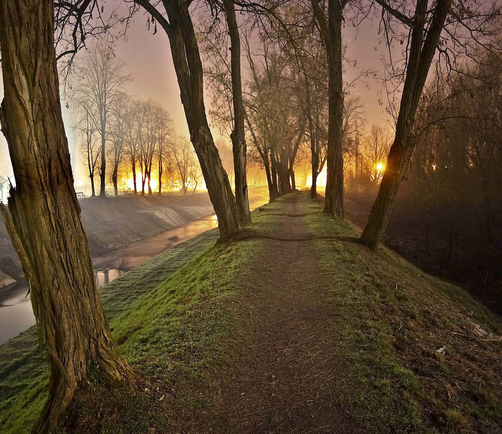
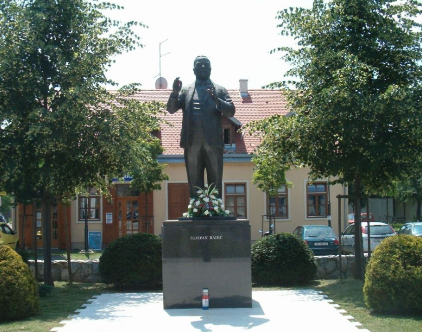

Gradski park
Predivna povijesna lokacija i simbol Petrinje.
Crkva sv. Lovre
Jedan od najvažnijih sakralnih objekata u gradu.

Nasip
Predivno mjesto za šetnju u rekreaciju.

Spomenik Stjepanu Radiću
#.